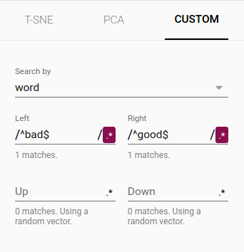
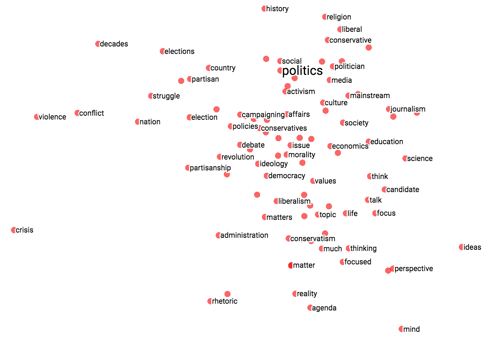
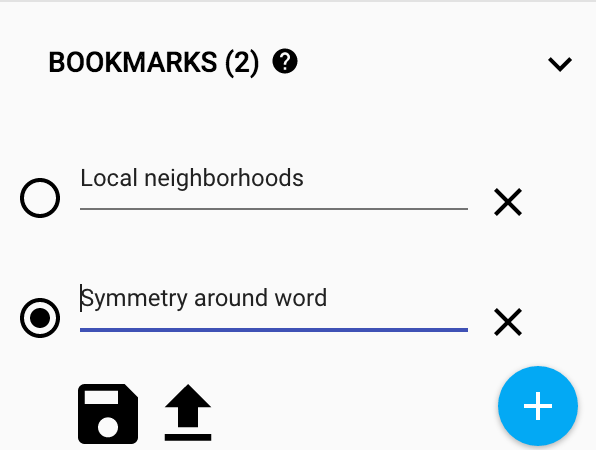

This document introduces the concept of embeddings, gives a simple example of how to train an embedding in TensorFlow, and explains how to view embeddings with the TensorBoard Embedding Projector (live example). The first two parts target newcomers to machine learning or TensorFlow, and the Embedding Projector how-to is for users at all levels.
An embedding is a mapping from discrete objects, such as words, to vectors of real numbers. For example, a 300-dimensional embedding for English words could include:
blue: (0.01359, 0.00075997, 0.24608, ..., -0.2524, 1.0048, 0.06259)
blues: (0.01396, 0.11887, -0.48963, ..., 0.033483, -0.10007, 0.1158)
orange: (-0.24776, -0.12359, 0.20986, ..., 0.079717, 0.23865, -0.014213)
oranges: (-0.35609, 0.21854, 0.080944, ..., -0.35413, 0.38511, -0.070976)
The individual dimensions in these vectors typically have no inherent meaning. Instead, it's the overall patterns of location and distance between vectors that machine learning takes advantage of.
Embeddings are important for input to machine learning. Classifiers, and neural networks more generally, work on vectors of real numbers. They train best on dense vectors, where all values contribute to define an object. However, many important inputs to machine learning, such as words of text, do not have a natural vector representation. Embedding functions are the standard and effective way to transform such discrete input objects into useful continuous vectors.
Embeddings are also valuable as outputs of machine learning. Because embeddings map objects to vectors, applications can use similarity in vector space (for instance, Euclidean distance or the angle between vectors) as a robust and flexible measure of object similarity. One common use is to find nearest neighbors. Using the same word embeddings as above, for instance, here are the three nearest neighbors for each word and the corresponding angles:
blue: (red, 47.6°), (yellow, 51.9°), (purple, 52.4°)
blues: (jazz, 53.3°), (folk, 59.1°), (bluegrass, 60.6°)
orange: (yellow, 53.5°), (colored, 58.0°), (bright, 59.9°)
oranges: (apples, 45.3°), (lemons, 48.3°), (mangoes, 50.4°)
This would tell an application that apples and oranges are in some way more similar (45.3° apart) than lemons and oranges (48.3° apart).
Embeddings in TensorFlow
To create word embeddings in TensorFlow, we first split the text into words
and then assign an integer to every word in the vocabulary. Let us assume that
this has already been done, and that word_ids is a vector of these integers.
For example, the sentence “I have a cat.” could be split into
[“I”, “have”, “a”, “cat”, “.”] and then the corresponding word_ids tensor
would have shape [5] and consist of 5 integers. To map these word ids
to vectors, we need to create the embedding variable and use the
tf.nn.embedding_lookup function as follows:
word_embeddings = tf.get_variable(“word_embeddings”,
[vocabulary_size, embedding_size])
embedded_word_ids = tf.nn.embedding_lookup(word_embeddings, word_ids)
After this, the tensor embedded_word_ids will have shape [5, embedding_size]
in our example and contain the embeddings (dense vectors) for each of the 5
words. At the end of training, word_embeddings will contain the embeddings
for all words in the vocabulary.
Embeddings can be trained in many network types, and with various loss functions and data sets. For example, one could use a recurrent neural network to predict the next word from the previous one given a large corpus of sentences, or one could train two networks to do multi-lingual translation. These methods are described in the Vector Representations of Words tutorial.
Visualizing Embeddings
TensorBoard includes the Embedding Projector, a tool that lets you interactively visualize embeddings. This tool can read embeddings from your model and render them in two or three dimensions.
The Embedding Projector has three panels:
- Data panel on the top left, where you can choose the run, the embedding variable and data columns to color and label points by.
- Projections panel on the bottom left, where you can choose the type of projection.
- Inspector panel on the right side, where you can search for particular points and see a list of nearest neighbors.
Projections
The Embedding Projector provides three ways to reduce the dimensionality of a data set.
-
t-SNE: a nonlinear nondeterministic algorithm (T-distributed stochastic neighbor embedding) that tries to preserve local neighborhoods in the data, often at the expense of distorting global structure. You can choose whether to compute two- or three-dimensional projections.
-
PCA: a linear deterministic algorithm (principal component analysis) that tries to capture as much of the data variability in as few dimensions as possible. PCA tends to highlight large-scale structure in the data, but can distort local neighborhoods. The Embedding Projector computes the top 10 principal components, from which you can choose two or three to view.
-
Custom: a linear projection onto horizontal and vertical axes that you specify using labels in the data. You define the horizontal axis, for instance, by giving text patterns for "Left" and "Right". The Embedding Projector finds all points whose label matches the "Left" pattern and computes the centroid of that set; similarly for "Right". The line passing through these two centroids defines the horizontal axis. The vertical axis is likewise computed from the centroids for points matching the "Up" and "Down" text patterns.
Further useful articles are How to Use t-SNE Effectively and Principal Component Analysis Explained Visually.
Exploration
You can explore visually by zooming, rotating, and panning using natural click-and-drag gestures. Hovering your mouse over a point will show any metadata for that point. You can also inspect nearest-neighbor subsets. Clicking on a point causes the right pane to list the nearest neighbors, along with distances to the current point. The nearest-neighbor points are also highlighted in the projection.
It is sometimes useful to restrict the view to a subset of points and perform projections only on those points. To do so, you can select points in multiple ways:
- After clicking on a point, its nearest neighbors are also selected.
- After a search, the points matching the query are selected.
- Enabling selection, clicking on a point and dragging defines a selection sphere.
Then click the "Isolate nnn points" button at the top of the Inspector pane on the right hand side. The following image shows 101 points selected and ready for the user to click "Isolate 101 points":

Selection of the nearest neighbors of “important” in a word embedding dataset.
Advanced tip: filtering with custom projection can be powerful. Below, we filtered the 100 nearest neighbors of “politics” and projected them onto the “worst” - “best” vector as an x axis. The y axis is random. As a result, one finds on the right side “ideas”, “science”, “perspective”, “journalism” but on the left “crisis”, “violence” and “conflict”.
|  |  |
| Custom projection controls. | Custom projection of neighbors of "politics" onto "best" - "worst" vector. |
To share your findings, you can use the bookmark panel in the bottom right corner and save the current state (including computed coordinates of any projection) as a small file. The Projector can then be pointed to a set of one or more of these files, producing the panel below. Other users can then walk through a sequence of bookmarks.

Metadata
If you are working with an embedding, you'll probably want to attach labels/images to the data points. You can do this by generating a metadata file containing the labels for each point and clicking "Load data" in the data panel of the Embedding Projector.
The metadata can be either labels or images, which are stored in a separate file. For labels, the format should be a TSV file (tab characters shown in red) whose first line contains column headers (shown in bold) and subsequent lines contain the metadata values. For example:
Word\tFrequency
Airplane\t345
Car\t241
...
The order of lines in the metadata file is assumed to match the order of vectors in the embedding variable, except for the header. Consequently, the (i+1)-th line in the metadata file corresponds to the i-th row of the embedding variable. If the TSV metadata file has only a single column, then we don’t expect a header row, and assume each row is the label of the embedding. We include this exception because it matches the commonly-used "vocab file" format.
To use images as metadata, you must produce a single sprite image, consisting of small thumbnails, one for each vector in the embedding. The sprite should store thumbnails in row-first order: the first data point placed in the top left and the last data point in the bottom right, though the last row doesn't have to be filled, as shown below.
| 0 | 1 | 2 |
| 3 | 4 | 5 |
| 6 | 7 |
Follow this link to see a fun example of thumbnail images in the Embedding Projector.
Mini-FAQ
Is "embedding" an action or a thing? Both. People talk about embedding words in a vector space (action) and about producing word embeddings (things). Common to both is the notion of embedding as a mapping from discrete objects to vectors. Creating or applying that mapping is an action, but the mapping itself is a thing.
Are embeddings high-dimensional or low-dimensional? It depends. A 300-dimensional vector space of words and phrases, for instance, is often called low-dimensional (and dense) when compared to the millions of words and phrases it can contain. But mathematically it is high-dimensional, displaying many properties that are dramatically different from what our human intuition has learned about 2- and 3-dimensional spaces.
Is an embedding the same as an embedding layer? No. An embedding layer is a part of neural network, but an embedding is a more general concept.